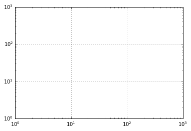
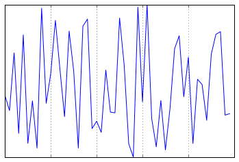
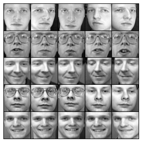
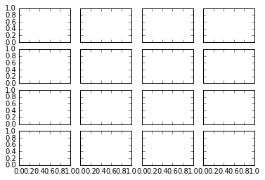
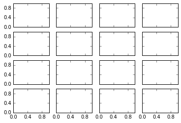
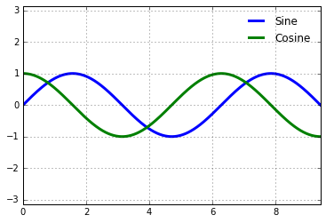
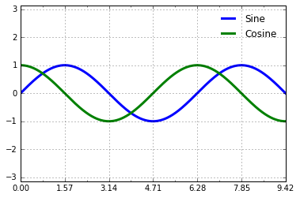
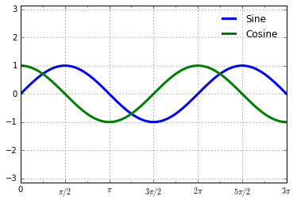

import matplotlib.pyplot as plt
import numpy as np
plt.style.use('classic')
%matplotlib inline눈금 사용자 정의
Matplotlib의 기본 틱 로케이터 및 포맷터는 일반적으로 많은 일반적인 상황에서 충분하도록 설계되었지만 모든 플롯에 최적이지는 않습니다. 이번 장에서는 관심 있는 특정 플롯 유형에 대한 눈금 위치 및 형식을 조정하는 몇 가지 예를 제공합니다.
그러나 예제를 살펴보기 전에 Matplotlib 플롯의 개체 계층 구조에 대해 좀 더 이야기해 보겠습니다. Matplotlib은 플롯에 나타나는 모든 것을 나타내는 파이썬(Python) 객체를 갖는 것을 목표로 합니다. 예를 들어 ‘그림’은 플롯 요소가 나타나는 경계 상자라는 점을 기억하세요. 각 Matplotlib 개체는 하위 개체의 컨테이너 역할도 합니다. 예를 들어 각 ’Figure’에는 하나 이상의 ’Axes’ 개체가 포함될 수 있으며, 각 개체에는 플롯 내용을 나타내는 다른 개체가 포함됩니다.
체크표시도 예외는 아닙니다. 각 축에는 ‘xaxis’ 및 ‘yaxis’ 속성이 있으며, 여기에는 축을 구성하는 선, 눈금 및 레이블의 모든 속성이 포함된 속성이 있습니다.
메이저 및 마이너 틱
각 축 내에는 주 눈금 표시와 보조 눈금 표시라는 개념이 있습니다. 이름에서 알 수 있듯이 주요 진드기는 일반적으로 더 크거나 더 뚜렷하고 작은 진드기는 일반적으로 더 작습니다. Matplotlib는 작은 눈금을 거의 사용하지 않지만 이를 볼 수 있는 한 곳은 로그 플롯 내입니다(다음 그림 참조).
ax = plt.axes(xscale='log', yscale='log')
ax.set(xlim=(1, 1E3), ylim=(1, 1E3))
ax.grid(True);
이 차트에서 각 주요 눈금은 큰 눈금 표시, 레이블 및 눈금선을 표시하는 반면, 각 작은 눈금은 레이블이나 눈금선 없이 작은 눈금 표시를 표시합니다.
이러한 눈금 속성(위치 및 레이블)은 각 축의 formatter 및 locator 개체를 설정하여 사용자 정의합니다. 방금 표시된 플롯의 x축에 대해 이를 살펴보겠습니다.
print(ax.xaxis.get_major_locator())
print(ax.xaxis.get_minor_locator())<matplotlib.ticker.LogLocator object at 0x1129b9370>
<matplotlib.ticker.LogLocator object at 0x1129aaf70>print(ax.xaxis.get_major_formatter())
print(ax.xaxis.get_minor_formatter())<matplotlib.ticker.LogFormatterSciNotation object at 0x1129aaa00>
<matplotlib.ticker.LogFormatterSciNotation object at 0x1129aac10>주요 눈금 레이블과 작은 눈금 레이블 모두 ‘LogLocator’(대수 플롯에 적합함)에 의해 지정된 위치가 있음을 확인합니다. 하지만 작은 틱에는 ‘NullFormatter’ 형식의 레이블이 있습니다. 이는 레이블이 표시되지 않음을 의미합니다.
이제 다양한 플롯에 대해 이러한 로케이터와 포맷터를 설정하는 몇 가지 예를 살펴보겠습니다.
눈금이나 레이블 숨기기
아마도 가장 일반적인 눈금/레이블 서식 지정 작업은 눈금이나 레이블을 숨기는 작업일 것입니다. 이 작업은 여기에 표시된 대로 plt.NullLocator 및 plt.NullFormatter를 사용하여 수행합니다(다음 그림 참조).
ax = plt.axes()
rng = np.random.default_rng(1701)
ax.plot(rng.random(50))
ax.grid()
ax.yaxis.set_major_locator(plt.NullLocator())
ax.xaxis.set_major_formatter(plt.NullFormatter())
x축에서 레이블을 제거하고(눈금/눈금선은 유지) y축에서 눈금(따라서 레이블과 눈금선도 포함)을 제거했습니다. 체크 표시가 전혀 없으면 여러 상황(예: 이미지 격자를 표시하려는 경우)에서 유용합니다. 예를 들어 지도 머신러닝(Machine Learning) 문제에 자주 사용되는 예인 다양한 얼굴의 이미지가 포함된 다음 그림을 고려해 보세요(예: 심층: 지원 벡터 머신 참조).
from sklearn.datasets import fetch_olivetti_faces
fig, ax = plt.subplots(5, 5, figsize=(5, 5))
fig.subplots_adjust(hspace=0, wspace=0)
# Get some face data from Scikit-Learn
faces = fetch_olivetti_faces().images
for i in range(5):
for j in range(5):
ax[i, j].xaxis.set_major_locator(plt.NullLocator())
ax[i, j].yaxis.set_major_locator(plt.NullLocator())
ax[i, j].imshow(faces[10 * i + j], cmap='binary_r')
각 이미지는 자체 축에 표시되며 눈금 값(이 경우 픽셀 번호)은 이 특정 시각화에 대한 관련 정보를 전달하지 않기 때문에 눈금 위치 지정자를 null로 설정했습니다.
틱 수 줄이기 또는 늘리기
기본 설정의 일반적인 문제 중 하나는 작은 하위 그림에 레이블이 붐비게 될 수 있다는 것입니다. 여기에 표시된 플롯 그리드에서 이를 확인합니다(다음 그림 참조).
fig, ax = plt.subplots(4, 4, sharex=True, sharey=True)
특히 x축 틱의 경우 숫자가 거의 겹쳐서 해독하기가 상당히 어렵습니다. One way to adjust this is with plt.MaxNLocator, which allows us to specify the maximum number of ticks that will be displayed. 이 최대 수가 주어지면 Matplotlib는 내부 논리를 사용하여 특정 눈금 위치를 선택합니다(다음 그림 참조).
# For every axis, set the x and y major locator
for axi in ax.flat:
axi.xaxis.set_major_locator(plt.MaxNLocator(3))
axi.yaxis.set_major_locator(plt.MaxNLocator(3))
fig
이렇게 하면 상황이 훨씬 더 깔끔해집니다. 규칙적인 간격의 틱 위치를 더 효과적으로 제어하려면 plt.MultipleLocator를 사용할 수도 있습니다. 이에 대해서는 다음 섹션에서 설명하겠습니다.
멋진 틱 형식
Matplotlib의 기본 눈금 형식은 아쉬운 점이 많을 수 있습니다. 광범위한 기본값으로 잘 작동하지만 때로는 다른 작업을 수행하고 싶을 수도 있습니다. 사인과 코사인 곡선의 플롯을 고려하십시오(다음 그림 참조).
# Plot a sine and cosine curve
fig, ax = plt.subplots()
x = np.linspace(0, 3 * np.pi, 1000)
ax.plot(x, np.sin(x), lw=3, label='Sine')
ax.plot(x, np.cos(x), lw=3, label='Cosine')
# Set up grid, legend, and limits
ax.grid(True)
ax.legend(frameon=False)
ax.axis('equal')
ax.set_xlim(0, 3 * np.pi);
여기에는 몇 가지 변경 사항이 있습니다. 첫째, 이 데이터가 \(\pi\)의 배수로 눈금과 눈금선의 간격을 두는 것이 더 자연스럽습니다. 우리가 제공한 숫자의 배수에 틱을 찾는 MultipleLocator를 설정하여 이를 수행합니다. 좋은 측정을 위해 \(\pi/2\) 및 \(\pi/4\)의 배수로 주요 및 보조 눈금을 모두 추가합니다(다음 그림 참조).
ax.xaxis.set_major_locator(plt.MultipleLocator(np.pi / 2))
ax.xaxis.set_minor_locator(plt.MultipleLocator(np.pi / 4))
fig
그러나 이제 이러한 눈금 레이블은 약간 어리석게 보입니다. \(\pi\)의 배수라는 것을 알 수 있지만 십진수 표현은 이를 즉시 전달하지 않습니다. 이 문제를 해결하려면 눈금 포맷터를 변경하면 됩니다. 우리가 원하는 작업에 대한 기본 제공 포맷터가 없으므로 대신 틱 출력에 대한 세밀한 제어를 제공하는 사용자 정의 함수를 허용하는 plt.FuncFormatter를 사용하겠습니다(다음 그림 참조).
def format_func(value, tick_number):
# find number of multiples of pi/2
N = int(np.round(2 * value / np.pi))
if N == 0:
return "0"
elif N == 1:
return r"$\pi/2$"
elif N == 2:
return r"$\pi$"
elif N % 2 > 0:
return rf"${N}\pi/2$"
else:
return rf"${N // 2}\pi$"
ax.xaxis.set_major_formatter(plt.FuncFormatter(format_func))
fig
이게 훨씬 낫습니다! 문자열을 달러 기호로 묶어 지정하여 Matplotlib의 LaTeX 지원을 사용했다는 점에 유의하세요. 이는 수학 기호 및 공식을 표시하는 데 매우 편리합니다. 이 경우 "$\pi$"는 그리스 문자 \(\pi\)로 렌더링됩니다.
포맷터 및 로케이터 요약
우리는 몇 가지 사용 가능한 포맷터와 로케이터를 살펴보았습니다. 내장된 로케이터와 포맷터 옵션을 모두 간략하게 나열하면서 이 장을 마무리하겠습니다. 이에 대한 자세한 내용은 독스트링이나 Matplotlib 온라인 설명서를 참조하세요. 다음 각각은 plt 네임스페이스에서 사용합니다.
| 로케이터 클래스 | 설명 |
|---|---|
| ‘널 로케이터’ | 진드기 없음 |
FixedLocator |
진드기 위치는 고정되어 있습니다. |
IndexLocator |
인덱스 플롯의 위치 지정자(예: 여기서 x = range(len(y))) |
선형 위치 |
최소에서 최대까지 균일한 간격의 틱 |
로그 로케이터 |
최소에서 최대까지 로그 간격의 틱 |
MultipleLocator |
틱과 범위는 기본의 배수입니다. |
MaxNLocator |
좋은 위치에서 최대 틱 수를 찾습니다. |
자동 위치 |
(기본값) 단순 기본값을 사용하는 MaxNLocator |
| ‘AutoMinorLocator’ | 사소한 진드기에 대한 로케이터 |
| 포맷터 클래스 | 설명 |
|---|---|
| ‘NullFormatter’ | 진드기에 레이블이 없습니다 |
IndexFormatter |
레이블 목록에서 문자열 설정 |
FixedFormatter |
레이블에 대한 문자열을 수동으로 설정 |
FuncFormatter |
사용자 정의 함수는 레이블을 설정합니다. |
FormatStrFormatter |
각 값에 형식 문자열을 사용하세요. |
ScalarFormatter |
스칼라 값의 기본 포맷터 |
LogFormatter |
로그 축의 기본 포맷터 |
우리는 이 책의 나머지 부분에서 이에 대한 추가 예를 보게 될 것입니다.